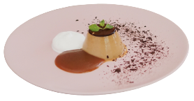

Pudim de Chocolate
Doces & Sobremesas
7 ingredientes
Clique para preparar
Pudim de Chocolate
| 1 lata |
Leite Condensado |
| 400ml |
Leite |
| 3un |
Ovo |
| 4 c. sopa |
Chocolate em pó |
Calda
| 1 x/ chá |
Açúcar |
| 1/2 x/chá |
Água |
| 1/4 x/chá |
Chocolate em pó |
| 4 c. sopa |
Chocolate em pó |
Modo de preparo
-
Prepare a calda levando o açúcar ao fogo em uma panela até ficar com a cor de caramelo. Lentamente adicione a água fervente e misture até dissolver o açúcar. Quando começar a ferver, adicione o chocolate em pó e misture bem.
-
Bata no liquidificador o leite condensado, leite, ovos e chocolate em pó. Despeje a mistura na forma caramelada. Asse no forno médio em banho-maria por 45min. Retire do forno, espere amornar e desenforme. Leve à geladeira por 1h e sirva com a calda.